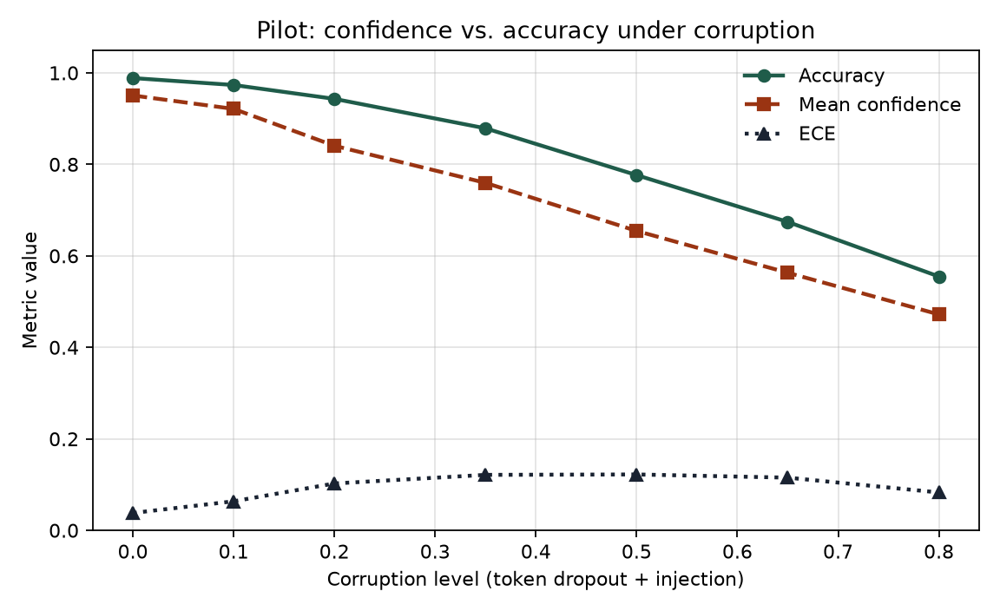
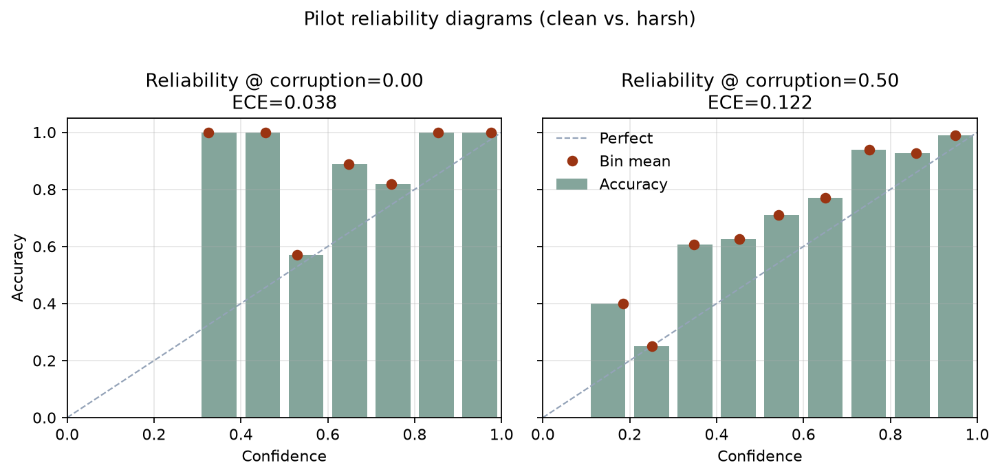

Pilot complete · full study in progress
Pilot: confidence vs. accuracy under token corruption
First-pass toy study — a shrink-wrapped version of the fuller question in the investigation plan. Not a production ASR/NLU result.
Question (pilot scope)
As controlled input corruption increases, does a simple intent classifier’s reported confidence track accuracy, or does calibration degrade — and in which direction (over- vs under-confidence)?
Setup
| Piece | Choice |
|---|---|
| Data | Synthetic 8-class “intent” utterances (templates + lexical bleed) |
| Size | 1,760 utterances → 1,232 train / 528 test (seed 42) |
| Model | CountVectorizer (1–2 grams) + LogisticRegression |
| Corruption | Token dropout (~0.85×level) + random in-vocab injection |
| Metrics | Accuracy, mean max-softmax confidence, 10-bin ECE |
python -m venv .venv && source .venv/bin/activate pip install -r research/code/requirements.txt python research/code/pilot_confidence_drift.py
Findings

| Corruption | Accuracy | Mean conf. | ECE | Conf − Acc |
|---|---|---|---|---|
| 0.00 | 0.989 | 0.951 | 0.038 | −0.038 |
| 0.20 | 0.943 | 0.841 | 0.103 | −0.103 |
| 0.50 | 0.777 | 0.655 | 0.122 | −0.122 |
| 0.80 | 0.555 | 0.472 | 0.083 | −0.083 |

What held
- Accuracy falls smoothly as corruption rises — the corruption knob works.
- ECE rises from ~0.04 (clean) to ~0.12 mid-corruption, then shrinks as both accuracy and confidence collapse.
What surprised me
The model became underconfident, not overconfident. Mean confidence stayed below accuracy at every level. Production memory from conversational pipelines was the opposite pattern: confidence staying high while quality slipped. This toy did not reproduce that failure mode.
What didn’t work / inconclusive
- Token dropout + vocab injection is a poor proxy for ASR noise or class-prior shift. It destroys evidence, so softmax mass spreads (underconfidence) instead of concentrating on a wrong class.
- Clean accuracy (~0.99) is still too easy despite lexical bleed.
- Operational-signal detectors were not tested here — that belongs to the fuller study.
Honest limitation
A finished pilot that fails to recreate the target pathology is still useful: it shows the loop (question → method → result → limitation) and sharpens the next experiment. Next step: change the corruption model toward mechanisms that can produce high-confidence errors, then re-measure.
Fuller investigation plan: research hub · markdown plan